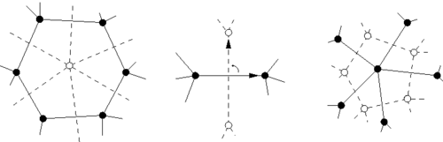
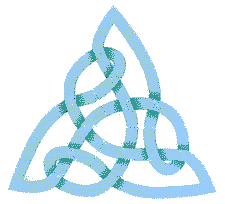
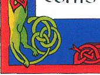

In this section you are going to learn how to put a nice little knot in a box, what I call "encapsulation". It is based on a mathematical notion called "duality", but stop! don’t run away, it’s easier to begin with an example to show you that 1. it’s easy; 2. you really need it if you want to do anything big in the celtic knot business.
Suppose you like the trefoil knot (I do!) and you want to do something with it. For example, a cross. As the trefoil is coded by a triangle, you try and put four triangles together. After a lot of sweat, curses and errors, you end up with something like that:
{kind=link}
That’s very nice but requires a lot of fine hand tuning. You can try and go further and make a bigger cross with five of these little crosses. After a lot of bad words, you may get something like this:
{kind=link}
Very nice indeed but difficult to adjust isn’t it? If you tried, you realized you cannot do large and precise figures this way. Fortunately, there is another way, it’s called encapsulation. But first you have to learn things about a mathematical (don’t run!) notion:
Duality
Going back to the trefoil, suppose, when you extract its graph, you don’t put the vertices into the white but into the black regions (see Extraction). Of course, the infinite region has to be split into several vertices not just one and these vertices are simbolically fused together by a continuous wall surrounding the whole knot. In pictures rather than words, you would end up with figure c, not figure b:
{kind=link}
What you’ve just witnessed is the construction of the dual graph of the triangle. Once you have the graph, you don’t need the knot, you can construct its dual straight away: The vertices of the dual graph are in the middle of the faces of the original graph and its edges are transverse to each edge: 
For example the triangular and hexagonal lattices are dual to each other. The dual of one triangle is a portion of the hexagonal lattice.

Now you see that it’s easier to form a little cross using the dual graph, the knot is completley inside a box, a triangular capsule! You just draw a square, add its two diagonals to make four triangles, copy the dual motif inside each triangle and open some edges in the walls so that the trefoils melt into one. In pictures:
{kind=link}
{kind=link}

And it’s even easier to construct the bigger cross, simply stack five square such as that one and open some doors to let them escape from their boxes:
{kind=link}
So the philosophy is that to make a big knotwork, you first have to find small knots you like, work out their dual graph which are enclosed in a capsule and use these boxes to tile the area you want to design. Let’s have a look at another example. Playing with triangular lattices, you stumbled onto that nice motif: 
{kind=link}
To make something with it, you first have to work out its dual graph:
{kind=link}
Then you can make for example a five branched star:
{kind=link}
Now if you want to do knots which have a beginning and an end, you have to switch to the older version of the site and look for entanglements.
